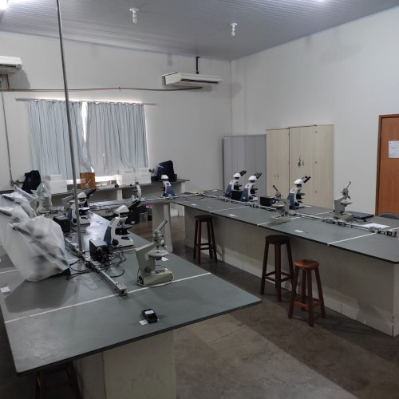

Saiba Mais
O Laboratório de Mineralogia Óptica e Petrografia (LAMPETRO) teve sua fundação no segundo semestre de 2015, na época estava sob coordenação da profa. Dra. Larissa Marques Barbosa de Araujo. Hoje a LAMPETRO constitui parte essencial do curso de Geologia da Universidade Federal de Uberlândia, lotado no Campus Monte Carmelo, atendendo as demandas das diversas disciplinas básicas da graduação desde o início ao final do curso permitindo assim, que as aulas práticas das disciplinas de Mineralogia II, Petrologias Ígnea, Metamórfica, Sedimentar, Pedologia, Microestrutural, Geologia econômica até os trabalhos de Conclusão de Curso sejam concluídos. (Figura 01) Além das atividades de ensino, o laboratório atende aos alunos do curso de Geologia para o desenvolvimento de Trabalhos de Conclusão de Curso (TCC), além de projetos de pesquisa de Iniciação Científica (IC), de pós-graduação que estejam vinculados às áreas de abrangência e projetos de extensão.

23 de jul de 2022